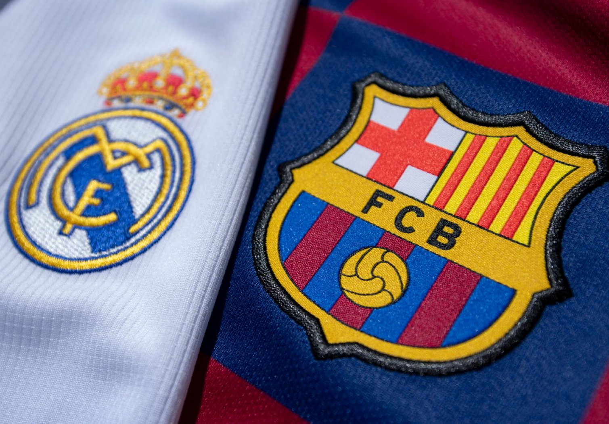
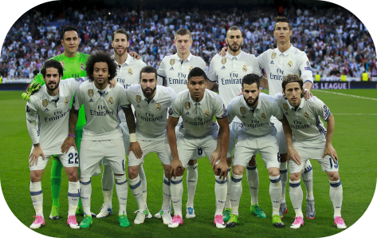
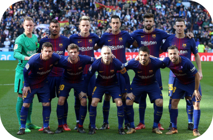

Rivalry
El Clasico, despite the recent disgraceful matches, is the biggest rivalry in world football. Behind the Champions League Final, it is the most followed club football match in the world. They are by far the two most successful clubs in Spain with Barcelona having 75 trophies to its name and Madrid 74, though Madrid has nine European Cups to Barca's four. They are also two of the most revered clubs across the world and have featured some of the best ever players.
Lionel Messi vs. Cristiano Ronaldo gives the derby an extra spark.